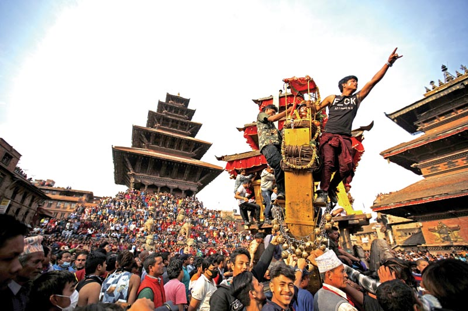

Commonly known as Biska Jatra is an annual event in Bhaktapur, Dhapasi Thimi and Tokha and other places in Nepal. The festival is celebrated at the start of the new year on the Bikram Sambat calendar, however, the festival itself is not related to Bikram Sambat.

Legend has it that this celebration is the "festival after the death of the serpent". Various areas of Bhaktapur city celebrate this festival according to their own rituals. The most eventful places are Bhaktapur Durbar Square and Thimi Balkumari. A chariot carrying a statue of the God Bhairava is pulled by hundreds of people to the Khalla Tole. Approximately a month earlier, the chariot is assembled near the Nyatapola temple (five stair temple).
<
The signature event on Bhaktapur Tamadhi is a tug-of-war between the Thane (upper) and Kone (lower) part of town. An approximately 25 meter Yoh si Dyo is erected in the yosi khyo[what language is this?] In the evening of New Year. The Yoh si is pulled down as the New Year officially commences.
 Balkumari Thimi hosts a color festival (Sindur Jatra). Folks from various parts of Madhyapur Thimi gather, carrying their own chariots in Layeku Thimi. People celebrate and share greetings, throwing simrik color powder and playing Dhimay music.
Bode witnesses a tongue-piercing ceremony. One resident spends the whole day with an iron spike piercing his tongue and roams the city by carrying multiple fiery torches on his shoulder. Juju Bhai Shrestha is the most renowned tongue piercer town.
Jatras are usually long processions from one part of the city to the other carrying various deities in chariots called ‘raths’ with mascots according to the theme of the Jatra. Following are some of the most spectacular Jatras celebrated in the valley.
Bisket Jatra falls on the first month of Nepalese calendar. It is celebrated specifically in Bhaktapur.
The myth behind the festival is that there was a princess whose husbands kept dying on the wedding bed. This was problematic for the royal family. Then came along a prince, blessed by the Goddess, who found a pair of serpents crawl out of the sleeping princess. He killed them and the princess finally remained married.
During this festival, chariots of Lord Bhairav and Goddess Bhadrakali are pulled through different parts of the city. At Lyasinkhel, a tall pole with two embroidered clothes, representing the serpents, is erected. As it is celebrated to mark the death of the serpents, it is also called Bisyau Jatra, meaning slaying of the serpents.
Because it begins from the end of Chaitra to the beginning of Baisakh, it is also known as the festival of the New Year.
Balkumari Thimi hosts a color festival (Sindur Jatra). Folks from various parts of Madhyapur Thimi gather, carrying their own chariots in Layeku Thimi. People celebrate and share greetings, throwing simrik color powder and playing Dhimay music.
Bode witnesses a tongue-piercing ceremony. One resident spends the whole day with an iron spike piercing his tongue and roams the city by carrying multiple fiery torches on his shoulder. Juju Bhai Shrestha is the most renowned tongue piercer town.
Jatras are usually long processions from one part of the city to the other carrying various deities in chariots called ‘raths’ with mascots according to the theme of the Jatra. Following are some of the most spectacular Jatras celebrated in the valley.
Bisket Jatra falls on the first month of Nepalese calendar. It is celebrated specifically in Bhaktapur.
The myth behind the festival is that there was a princess whose husbands kept dying on the wedding bed. This was problematic for the royal family. Then came along a prince, blessed by the Goddess, who found a pair of serpents crawl out of the sleeping princess. He killed them and the princess finally remained married.
During this festival, chariots of Lord Bhairav and Goddess Bhadrakali are pulled through different parts of the city. At Lyasinkhel, a tall pole with two embroidered clothes, representing the serpents, is erected. As it is celebrated to mark the death of the serpents, it is also called Bisyau Jatra, meaning slaying of the serpents.
Because it begins from the end of Chaitra to the beginning of Baisakh, it is also known as the festival of the New Year.